Signal detected over El Alamein
Follow the signal.
Open the case files.
Sweep the searchlight across the city. Every lit building is a confirmed case: a product, a role or an award.
Calibrating searchlight
Gotham night network
00 open case files